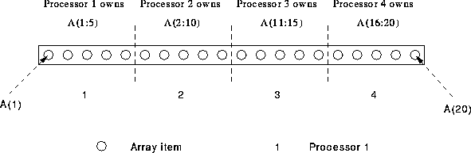

Give equal sized chunks of an array to each processor. For example,
PROGRAM Chunks
REAL, DIMENSION(20) :: A
!HPF$ PROCESSORS, DIMENSION(4) :: P
!HPF$ DISTRIBUTE (BLOCK) ONTO P :: A
....

Figure 18: Visualisation of BLOCK Distribution
If an array, A has  elements and is mapped onto
elements and is mapped onto  processors
each processor gets a block of (a maximum) of
processors
each processor gets a block of (a maximum) of  elements. See Figure 18.
elements. See Figure 18.
Here, the array has 20 elements and this is distributed blockwise onto a four element processor chain. This means that by using the above formula each processor gets a block of 5 elements. The first processor gets the first block, a(1:5), the second gets elements A(6:10) and so on.